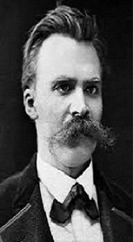

Definición

Es el rechazo de todos los principios religiosos y morales, a menudo en la creencia de que la vida no tiene sentido.
El término nihilista fue creado por el novelista ruso Iván Turguénev en su novela Padres e hijos (1862): "Nihilista es la persona que no se inclina ante ninguna autoridad, que no acepta ningún principio como artículo de fe".
Nietzsche
¿Quien fue Nietzsche?
Friedrich Wilhelm Nietzsche nacido el 15 de octubre de 1844 en Prusia.Considerado uno de los filósofos más importantes de la filosofía occidental, cuya obra ha ejercido una profunda influencia tanto en la historia como en la cultura occidental.
Datos curiosos
1.Estudió filología y ejerció de profesor de filología en Basilea, aunque acabó renunciando a este trabajo bastante pronto.2.Cuando se trasladó a Basilea renunció a su nacionalidad alemana, y permaneció sin una nacionalidad oficial reconocida hasta el resto de sus días.
3.A los 44 años tuvo un colapso mental, cosa que resultó ser parte de la raíz de su demencia, que avanzó hasta el fin de sus días.

La famosa frase
Friedrich Nietzsche cuya maxima influencia fue Arthur Schopenhauer,un filosofo que veremos mas tarde popularizo una de las frases mas importantes en el contexto nihilista, es la de "Dios ha muerto" atribuida a Dostoievski Nietzsche retoma la frase en La gaya ciencia.
La frase no significa que Nietzsche creía que existía un Dios y había muerto, en realidad la frase del filósofo alemán es una metáfora. El filósofo quiso expresar que el Dios cristiano no es más la fuente creíble de los principios morales absolutos.
En su frase, Nietzsche expresa que no solo Dios murió, sino que el ser humano que lo mató con el propósito de llegar a un mayor entendimiento del mundo. En otras palabras, al cuestionarse, el ser humano mató a Dios. Pero para Nietzsche, la muerte de Dios desencadena cierta crisis ya que la sociedad nació y se fundó con estos principios morales.
Otros representantes
Schopenhauer
Arthur Schopenhauer fue un filósofo alemán nacido en Danzig, el 22 de febrero de 1788 y fallecido en Fráncfort del Meno, Reino de Prusia, un 21 de septiembre de 1860.en cuanto a la influencia en nietzsche de parte de este filosofo pesimista podemos destacar que La “voluntad de vivir” (negación de la vida) de Schopenhauer da paso a la “voluntad de poder” (afirmación de la vida) en Nietzsche.
Camus
Nació como Albert Camus Sintes. Familia de colonos franceses. fue Camus fue centrodelantero del equipo juvenil Racing Universitaire d´Alger desde dondeempezaria a formular su teoria filosofica el absurdismo "Lo que más sé sobre la moral y las obligaciones de los hombres se lo debo al fútbol". La filosofía del absurdo está vinculada al existencialismo, aunque no debe ser confundido con éste (hay quienes la consideran un hipónimo de nihilista).
El absurdo sucede de la confrontacion entre la busqueda del ser humano
y el silencio irracional del mundo
Libros
Redes